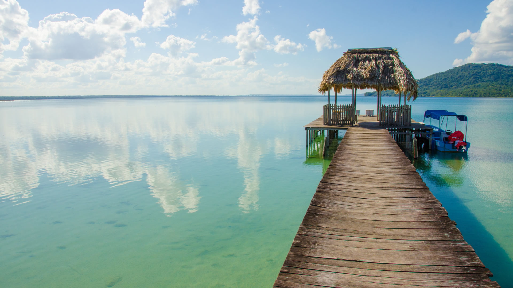
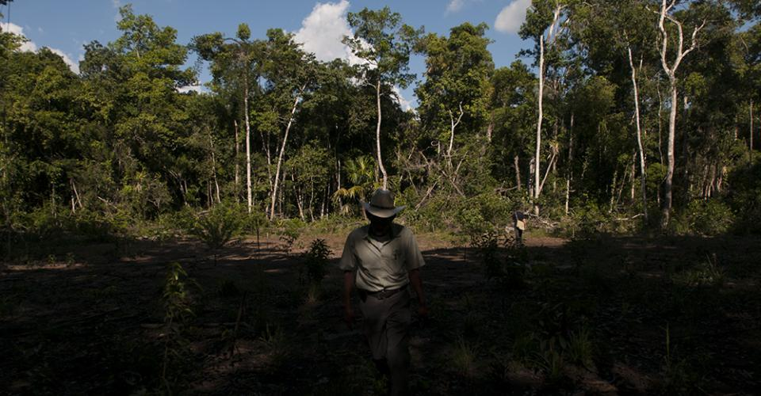

División Polítca
El departamento de Petén cuenta con 14 municipios que son:
| 1. Dolores | 6. San Andés | 11. Santa Ana |
| 2. Flores | 7. San Benito | 12. Sayaxché |
| 3. La libertad | 8.San Francisco | 13. Las cruces |
| 4. Melchor de Mencos | 9. San José | 14. El chal |
| 5. Popotún | 10. San Luis |
Con base a las cifras recopiladas por el Censo 2018, en Petén habitan 545,600 personas. De los cuales, 272,863 (50.01%) son hombres; mientras que 272,737 (49.99%) son mujeres.
Hidrografía: Este departamento es atravesado por numerosos ríos, cuyas desembocaduras se encuentran en el Mar Caribe y en el Golfo de México. Además, el departamento cuenta con numerosos lagos y lagunas. Ríos principales: Usumacinta. Es el río es el más caudaloso del departamento y de Guatemala, río Mopán, río La Pasión, río San Pedro, río Azul, río San Juan, río Salinas. Los lagos principales son: Lago Petén Itzá. Es el tercer lago más grande de Guatemala y el lago Yaxhá, laguna El Tigre y lago Salpetén.
Bosques: El Municipio está incluido en la zona de transición del bosque húmedo a húmedo subtropical y pertenece a la región de Tierras Calizas Bajas del Norte. Por su composición geológica predominan las rocas carbonáticas y los sedimentos marinos y margas, también se encuentran materiales geológicos como aluviones del cuaternario o yesos. De acuerdo con el Instituto Nacional de Estadística (Censo Agropecuario 2003), en el Municipio existen 7,178.62 manzanas de bosques, de las cuales 787.67 manzanas (11%) son bosques plantados y 6,390.95 manzanas (89%) corresponden a bosques naturales. Se pudo determinar que para el año 19 que para el año 94 existían dentro del Municipio las siguientes especies maderables: pino blanco, laurel, tzalam, palo de zope o palo negro, jaraguay, chichipate, palo de lagarto, cedro, caoba, jobillo, Ceiba, canaxán chichiqueque, mapola, matilizguate, teca y santa maría. Mientras que para el año 2005 se cuenta con árboles de: caoba, cedro, chico zapote, mapola, matilizguate, pino, melina, teca, santa maría, sangre san Juan y ojushte.
De las 14 zonas de vida vegetal en Guatemala, según la clasificación de Holdridge, este departamento, por el tipo de topografía existente en su terreno, cuenta con dos zonas de vida. Estas son:
1. Bosque húmedo subtropical cálido (bh-SC)
2. Bosque muy húmedo subtropical cálido (bmh-SC)